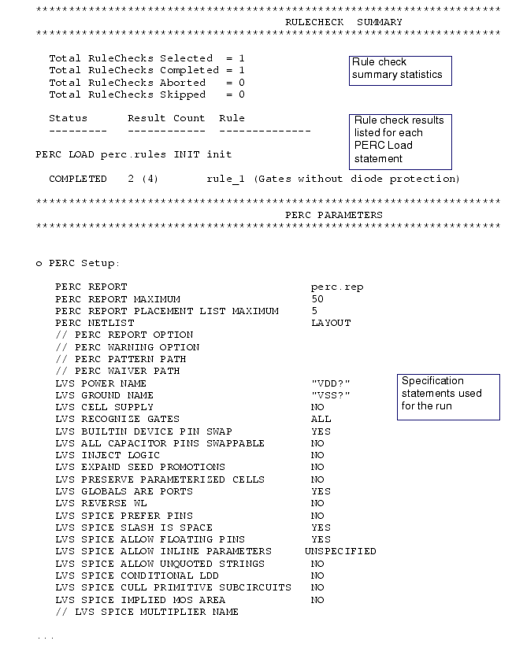
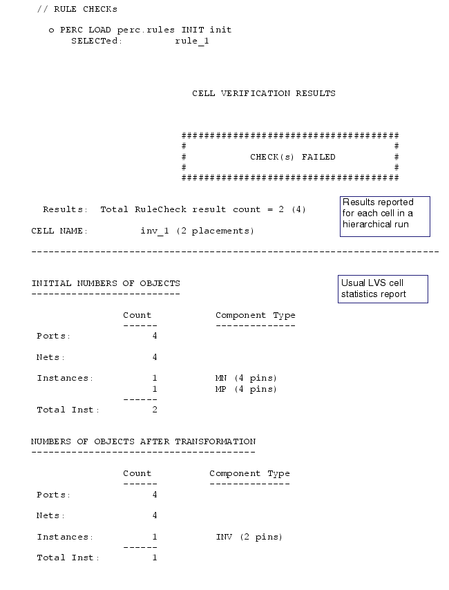

The report continues for each cell, and concludes with the top-level cell statistics.
If any SPICE netlist errors or warnings are issued, these are also listed.
The verbosity of certain elements of the report is controlled by the PERC Report Option and PERC Warning Option specification statements. The number of results reported is controlled by the PERC Report Maximum specification statement. For an abbreviated summary, use PERC Summary Report.
For information about viewing Calibre PERC results in Calibre RVE, see “Using Calibre RVE for PERC” in the Calibre RVE User’s Manual.